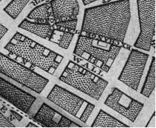

Jena Osman
from “Financial District”
Wall

1653: City Tavern on Pearl Street becomes the first City Hall. Stuyvesant orders a protective wall to be built from river to river to keep cattle from wandering off. It then turns into a wall to protect/fortify against the British and Native Americans. But when no enemy appears, the wall falls into disrepair, the wood taken for use as firewood. With word of each new possible enemy, Stuyvesant orders the wall be re-fortified, and this is done with slave labor. Eventually the site of the wall becomes Wall St.
1654: The Dutch are ousted from Brazil by Portugal. 23 Sephardic Jews from Brazil are granted asylum and land in New Amsterdam, much to Stuyvesant’s chagrin. Dutch Jews are major investors in the Dutch West India Company.
1655: New Amsterdam becomes a slave trading port. The first slave ship direct from Africa arrives with three hundred Africans from Guinea. Oloff van Cortlandt is made mayor of New Amsterdam.
1664: The port changes hands when the Dutch surrender it to British forces without a fight. The British rename the town New York, in honor of the king’s brother James, the Duke of York—a major shareholder in the Royal African Company, which has a monopoly on the British slave trade. After a few years of British rule, the Dutch take over again (1673), then the British take it back (1674).
Depression
Wall + Depression
at first the wall was a palisade, a northern limit to keep the cattle from wandering off. Latin literally and figuratively, to squeeze, past participle has root which could well be the Indo-European root, perhaps with metathetic variant.
she disguises herself as a simpler person, so as to escape anyone’s notice.
follow the small wooden line across the perimeter, from east river to west. compare with Latin (stem, root), a wine-press, and perhaps Russian, Old Slavic to trample, Lithuanian to thrash, flog.
she circulates, crosses borders, and hopes she is safe for the night.
there were two threats: native americans and new englanders. perhaps also Sanskrit, he knocks with the foot.
three boys knock against the crowds of traders.
a planned invasion, a sizable fleet assembling and ready to sail, an easy target. on the Latin past participle is formed the frequent, whence Old French-French, whence the noun derives from Old French-French (from). a peace treaty delayed the inevitable for ten years.
they demand that the body be kept in circulation and dredge the river for its bones and blubbery flesh.
also from past participle comes, oblique stem Medieval French-French, adopted by English-Late Latin, adopted by English—, Old French-Early Modern French, adopted by English.
their lanterns threaten the water with light.
the wall was never tested before it was destroyed. Latin becomes Old French-Medieval French, past participle, feminine, used as Medieval French noun, adopted by Middle English with variant, whence English; derives from Middle English, from Middle English. a monument to our folly.
she’s offered a glass and although suspicious, smiles thank you so as not to give herself away. she can hear the dogs barking.
compress, express, impress, imprint, oppress, repress, reprimand, sprain, suppress. synonymous with high finance, a name is not a street but a business. Latin to press down, has past participle, whence the Late Latin intensively to press down hard.
their boat, their skimmers, their dredging tools, their lanterns.
site of the second city hall, 1699, and there a whipping post, pillory and stocks. English could derive from either the Latin past participle or the Late Latin infinitive. public lashings of slaves up and down the block beyond the market established for their purchase.
each bark jars her out of shallow sleep between the tree roots.
the past participle has derivatives, oblique stem, whence, perhaps via Medieval French-French, the English, and (crusher of weakness), whence perhaps the form of the technical English. a newsman is critical of the ruling party, then tried for libel.
she was critical and now hunted.
Latin to press out, has past participle, whence the Old French-French adjective, feminine, English. alexander hamilton is in residence, voices popular opinion, frees the newsman and there’s much rejoicing in the street.
she stays in the shadow of a doorway until the parade is past.
derives from Medieval French, from Old French-French after the Latin. all in a day’s work. “Said Meal (Slave) Markett greatly Obstructs the agreeable prospect of the East River which those that live in Wall St. would Otherwise enjoy; that it Occasions a Dirty Street Offensive to the Inhabitants on each side and Disagreeable to those that pass.”
three boys pass a radio from ear to ear. do you read me. over. over.
Latin to press or under (hence to put down), to press under foot, hence to cause to disappear, to subjugate, has past participle whence a library, a university.
quick, put the fire out.
a stamp act congress. derivative Latin, oblique stem becomes Medieval French-French adopted by English. the invaders left it all a mess, burned down, trashed. the French has analogous derivative, feminine, whence English. derivative Late Latin provides at least the form of English. washington irving watches the inauguration of his namesake.
she stays in the shadow of a doorway, the door suddenly opens and an arm pulls her in by the neck.
derivative Latin (oblique stem). a market made under a buttonwood tree, the new york herald made in a basement office. everything goes in the great fire.
the radio bursts in static trumpets. their jaws show square in the lantern light.
the market wields its greatest power to date funding the civil war.
they find the ashes, the charred bits, the grass matted down where a body had lain.
the stock exchange, 1903, with corinthian columns, a temple façade. derivative Latin (oblique stem),each seat owned for a certain price, the price an indicator of the state of the economy.
she’s tied to a chair and interrogated under a bare bulb.
j.p. morgan and company, 1920, a horse and buggy explode with a load of dynamite. the church bells strike noon, killing mostly clerks and stenographers. Late Latin concealment, becomes English (and Early Modern French-French). the scars in the palmer raids and stonework are still visible.
three boys read a map and determine that they must separate in order to investigate all possible avenues of escape.
illegal route, symbolic protest, a threatening anonymous letter. and Late Latin, hider (of another’s slaves) supplied the form of English. “The bomb outrage in New York emphasizes the extent to which the alien scum from the cesspools and sewers of the Old World has polluted the clear spring of American democracy” (washington post, 1920).
Bio:
Jena Osman’s books include An Essay in Asterisks (Roof Books) and The Character (Beacon). She edits the ChainLink book series with Juliana Spahr and teaches in the Creative Writing program at Temple University. Her essay-poem “Public Figures” can be found in the Summer 2007 issue of How2.